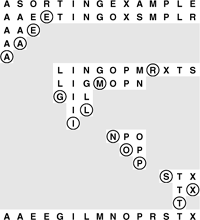
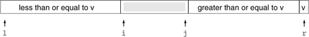
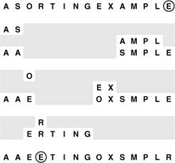
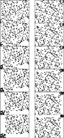

C++ Programming Robert Sedgewick - Princeton University Addison Wesley Professional Algorithms in C++, Parts 1–4: Fundamentals, Data Structure, Sorting, Searching, Third Edition C++ Programming Robert Sedgewick - Princeton University Addison Wesley Professional Algorithms in C++, Parts 1–4: Fundamentals, Data Structure, Sorting, Searching, Third Edition
7.1. The Basic Algorithm
Quicksort is a divide-and-conquer method for sorting. It works by partitioning an array into two parts, then sorting the parts independently. As we shall see, the precise position of the partition depends on the initial order of the elements in the input file. The crux of the method is the partitioning process, which rearranges the array to make the following three conditions hold:
The element a[i] is in its final place in the array for some i. None of the elements in a[l],. . ., a[i-1] is greater than a[i]. None of the elements in a[i+1],. . ., a[r] is less than a[i].
Program 7.1. Quicksort|
If the array has one or fewer elements, do nothing. Otherwise, the array is processed by a partition procedure (see Program 7.2), which puts a[i] into position for some i between l and r inclusive, and rearranges the other elements such that the recursive calls properly finish the sort.
template <class Item>
void quicksort(Item a[], int l, int r)
{
if (r <= l) return;
int i = partition(a, l, r);
quicksort(a, l, i-1);
quicksort(a, i+1, r);
}
|
We achieve a complete sort by partitioning, then recursively applying the method to the subfiles, as depicted in Figure 7.1. Because the partitioning process always puts at least one element into position, a formal proof by induction that the recursive method constitutes a proper sort is not difficult to develop. Program 7.1 is a recursive program that implements this idea.
Quicksort is a recursive partitioning process: We partition a file by putting some element (the partitioning element) in place, and rearranging the array such that smaller elements are to the left of the partitioning element and larger elements to its right. Then, we sort the left and right parts of the array recursively. Each line in this diagram depicts the result of partitioning the displayed subfile using the circled element. The end result is a fully sorted file.

We use the following general strategy to implement partitioning. First, we arbitrarily choose a[r] to be the partitioning element—the one that will go into its final position. Next, we scan from the left end of the array until we find an element greater than the partitioning element, and we scan from the right end of the array until we find an element less than the partitioning element. The two elements that stopped the scans are obviously out of place in the final partitioned array, so we exchange them. Continuing in this way, we ensure that no array elements to the left of the left pointer are greater than the partitioning element, and no array elements to the right of the right pointer are less than the partitioning element, as depicted in the following diagram:

Here, v refers to the value of the partitioning element, i to the left pointer, and j to the right pointer. As indicated in this diagram, it is best to stop the left scan for elements greater than or equal to the partitioning element and the right scan for elements less than or equal to the partitioning element, even though this policy might seem to create unnecessary exchanges involving elements equal to the partitioning element (we shall examine the reasons for this policy later in this section). When the scan pointers cross, all that we need to do to complete the partitioning process is to exchange a[r] with the leftmost element of the right subfile (the element pointed to by the left pointer). Program 7.2 is an implementation of this process, and Figures 7.2 and 7.3 depict examples.
Quicksort partitioning begins with the (arbitrary) choice of a partitioning element. Program 7.2 uses the rightmost element E. Then, it scans from the left over smaller elements and from the right over larger elements, exchanges the elements that stop the scans, continuing until the scan pointers meet. First, we scan from the left and stop at the S, then we scan from the right and stop at the A, and then we exchange the S and the A. Next, we continue the scan from the left until we stop at the O, and continue the scan from the right until we stop at the E, then exchange the O and the E. Next, our scanning pointers cross: We continue the scan from the left until we stop at the R, then continue the scan from the right (past the R) until we stop at the E. To finish the process, we exchange the partitioning element (the E at the right) with the R.

The partitioning process divides a file into two subfiles that can be sorted independently. None of the elements to the left of the left scan pointer is larger, so there are no dots above and to its left; and none of the elements to the right of the right scan pointer is smaller, so there are no dots below and to its right. As shown in these two examples, partitioning a random array divides it into two smaller random arrays, with one element (the partitioning element) ending up on the diagonal.

The inner loop of quicksort increments a pointer and compares an array element against a fixed value. This simplicity is what makes quicksort quick: It is hard to envision a shorter inner loop in a sorting algorithm.
Program 7.2 uses an explicit test to stop the scan if the partitioning element is the smallest element in the array. It might be worthwhile to use a sentinel to avoid this test: The inner loop of quicksort is so small that this one superfluous test could have a noticeable effect on performance. A sentinel is not needed for this implementation when the partitioning element is the largest element in the file, because the partitioning element itself is at the right end of the array to stop the scan. Other implementations of partitioning discussed later in this section and elsewhere in this chapter do not necessarily stop the scan on keys equal to the partitioning element—we might need to add a test to stop the pointer from running off the right end of the array in such an implementation. On the other hand, the improvement to quicksort that we discuss in Section 7.5 has the side benefit of needing neither the test nor a sentinel at either end.
The partitioning process is not stable, because any key might be moved past a large number of keys equal to it (which have not even been examined yet) during any exchange. No easy way to make an array-based quicksort stable is known.
The partitioning procedure must be implemented carefully. Specifically, the most straightforward way to guarantee that the recursive program terminates is that it (i) does not call itself for files of size 1 or less; and (ii) calls itself for only files that are strictly smaller than given as input. These policies may seem obvious, but it is easy to overlook a property of the input that can lead to a spectacular failure. For instance, a common mistake in implementing quicksort is not ensuring that one element is always put into position, then falling into an infinite recursive loop when the partitioning element happens to be the largest or smallest element in the file.
Program 7.2. Partitioning|
The variable v holds the value of the partitioning element a[r], and i and j are the left and right scan pointers, respectively. The partitioning loop increments i and decrements j, while maintaining the invariant property that no elements to the left of i are greater than v and no elements to the right of j are smaller than v. Once the pointers meet, we complete the partitioning by exchanging a[i] and a[r], which puts v into a[i], with no larger elements to v's right and no smaller elements to its left.
The partitioning loop is implemented as an infinite loop, with a break when the pointers cross. The test j == l protects against the case that the partitioning element is the smallest element in the file.
template <class Item>
int partition(Item a[], int l, int r)
{ int i = l-1, j = r; Item v = a[r];
for (;;)
{
while (a[++i] < v) ;
while (v < a[--j]) if (j == l) break;
if (i >= j) break;
exch(a[i], a[j]);
}
exch(a[i], a[r]);
return i;
}
|
When duplicate keys are present in the file, the pointer crossing is subtle. We could improve the partitioning process slightly by terminating the scans when i < j, and then using j, rather than i-1, to delimit the right end of the left subfile for the first recursive call. Letting the loop iterate one more time in this case is an improvement, because, whenever the scanning loops terminate with j and i referring to the same element, we end up with two elements in their final positions: the element that stopped both scans, which must therefore be equal to the partitioning element, and the partitioning element itself. This case would occur, for example, if R were E in Figure 7.2. This change is probably worth making, because, in this particular case, the program as given leaves a record with a key equal to the partitioning key in a[r], and that makes the first partition in the call quicksort(a, i+1, r) degenerate, because its rightmost key is its smallest. The partitioning implementation in Program 7.2 is a bit easier to understand, however, so we refer to it as the basic quicksort partitioning method. If significant numbers of duplicate keys might be present, other factors come into play. We consider them next.
There are three basic strategies that we could adopt with respect to keys equal to the partitioning element: have both pointers stop on such keys (as in Program 7.2); have one pointer stop and the other scan over them; or have both pointers scan over them. The question of which of these strategies is best has been studied in detail mathematically, and results show that it is best to have both pointers stop, primarily because this strategy tends to balance the partitions in the presence of many duplicate keys, whereas the other two can lead to badly unbalanced partitions for some files. We also consider a slightly more complicated and much more effective method for dealing with duplicate keys in Section 7.6.
Ultimately, the efficiency of the sort depends on how well the partitioning divides the file, which in turn depends on the value of the partitioning element. Figure 7.2 shows that partitioning divides a large randomly ordered file into two smaller randomly ordered files, but that the actual split could be anywhere in the file. We would prefer to choose an element that would split the file near the middle, but we do not have the necessary information to do so. If the file is randomly ordered, choosing a[r] as the partitioning element is the same as choosing any other specific element, and will give us a split near the middle on the average. In Section 7.4 we consider the analysis of the algorithm that allows us to see how this choice compares to the ideal choice. In Section 7.5 we see how the analysis guides us in considering choices of the partitioning element that make the algorithm more efficient.
Exercises |  7.1 Show, in the style of the example given here, how quicksort sorts the file E A S Y Q U E S T I O N. 7.1 Show, in the style of the example given here, how quicksort sorts the file E A S Y Q U E S T I O N.
| | 7.2 Show how the file 1 0 0 1 1 1 0 0 0 0 0 1 0 1 0 0 is partitioned, using both Program 7.2 and the minor modifications suggested in the text. | | 7.3 Implement partitioning without using a break statement or a goto statement. | |  7.4 Develop a stable quicksort for linked lists. 7.4 Develop a stable quicksort for linked lists.
| |  7.5 What is the maximum number of times during the execution of quicksort that the largest element can be moved, for a file of N elements? 7.5 What is the maximum number of times during the execution of quicksort that the largest element can be moved, for a file of N elements?
|
|